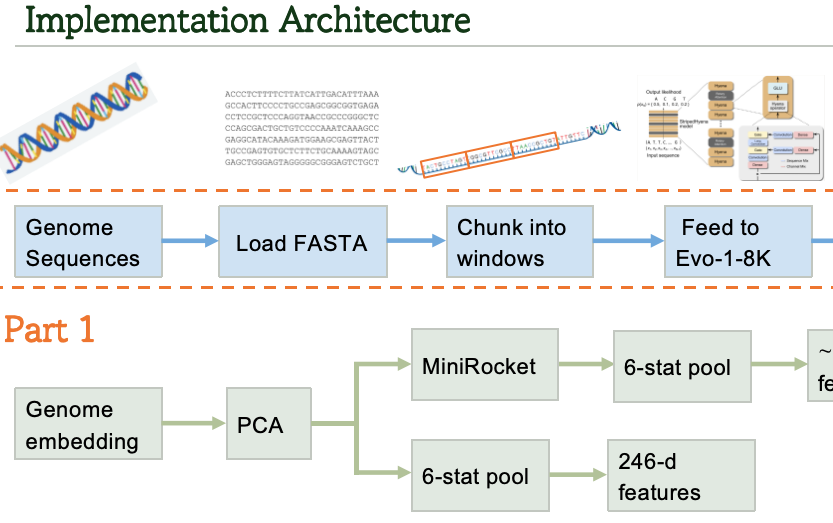
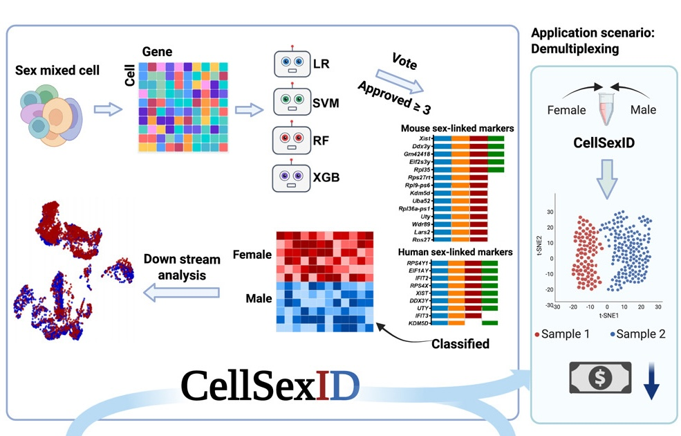
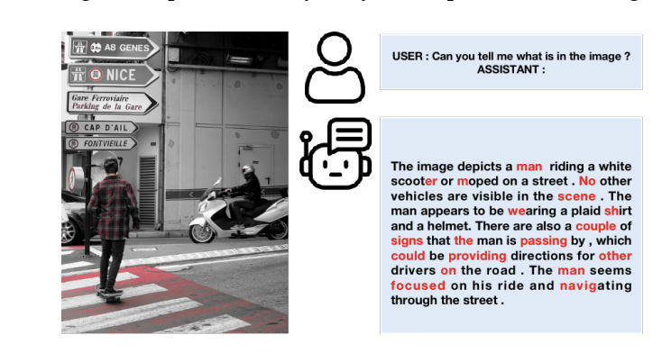
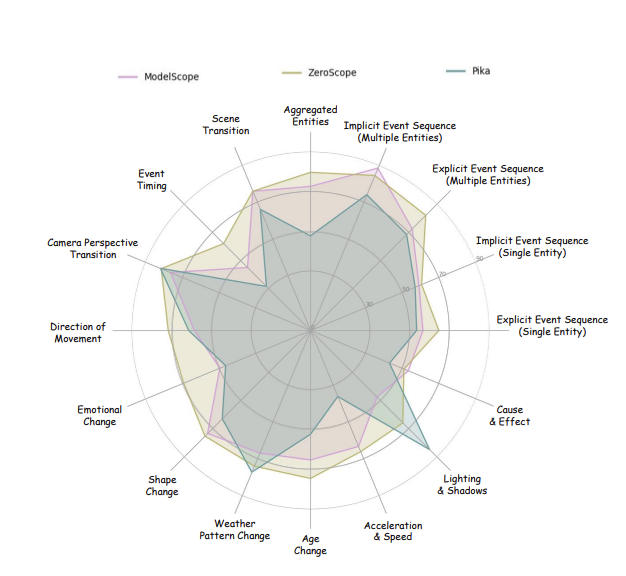
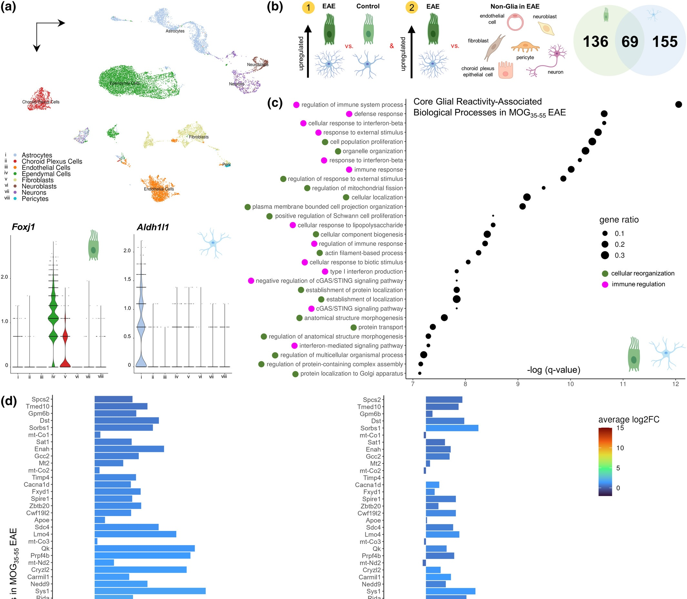
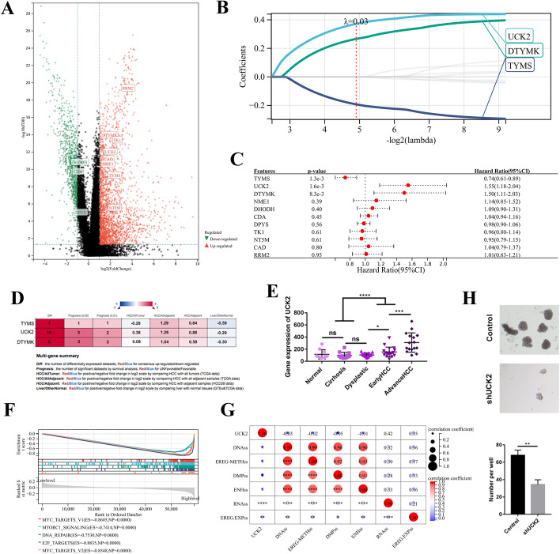

Huilin Tai
Hello! I am an incoming PhD student in Computer Science at Rice University, where I will be advised by Prof. Andrew H. Song.
I recently completed a thesis-based M.S. in Computer Science at Columbia University, working with Prof. Mohammed AlQuraishi on long-context transformer models for genomic sequence analysis. I received my B.Sc. in Statistics and Computer Science from McGill University, where I worked with Prof. Jun Ding, Prof. Anmar Khadra, and Prof. Hamed Hatami.
My research focuses on efficient and reliable foundation models, particularly scalable inference and robust model systems.
- Long-context inference for foundation models
- Reliable, scalable, and explainable model systems
- Multimodal AI for scientific and biomedical data
I am always happy to discuss research ideas or collaborations. Feel free to reach out! Outside of research, I enjoy squash, sketching, and crafting.
Publications



Mingxiao Huo, Jiayi Zhang, Hewei Wang, Jinfeng Xu, Zheyu Chen, Huilin Tai, Ian Yijun Chen
ICML TTODLer Workshop, 2025

Pengliang Ji, Chuyang Xiao, Huilin Tai, Mingxiao Huo
CVPR Workshop, 2024

Adam M.R. Groh et al., Huilin Tai
Journal of Neurochemistry, 2024

Xiaorong Guo, Huilin Tai, Xiaoqing Li, Peng Liu, Jin Liu, Shan Yu
Clinical and Experimental Obstetrics & Gynecology, 2024

Dehai Wu et al., Huilin Tai
Cellular & Molecular Biology Letters, 2022
Contact
Email: ht62@rice.edu